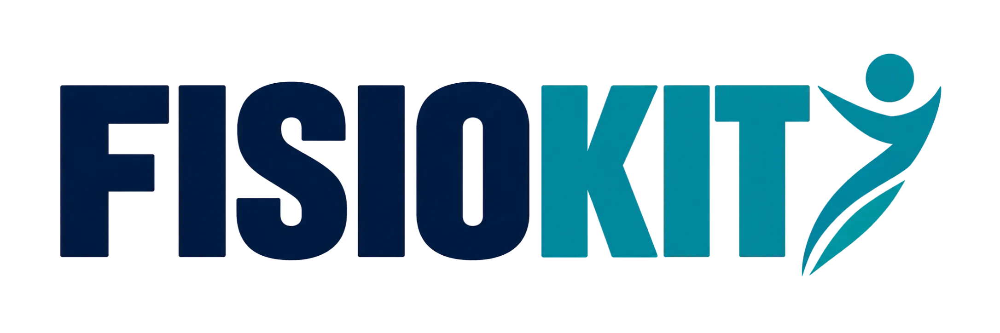
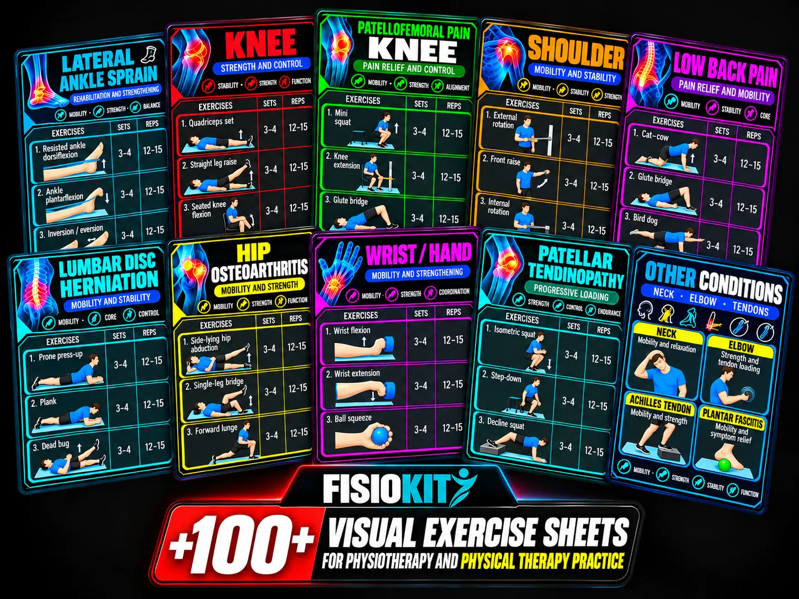
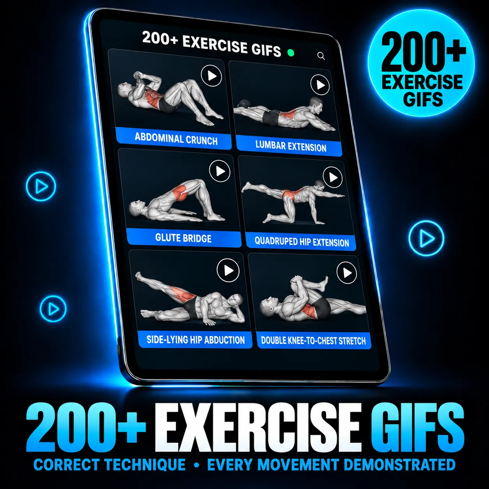
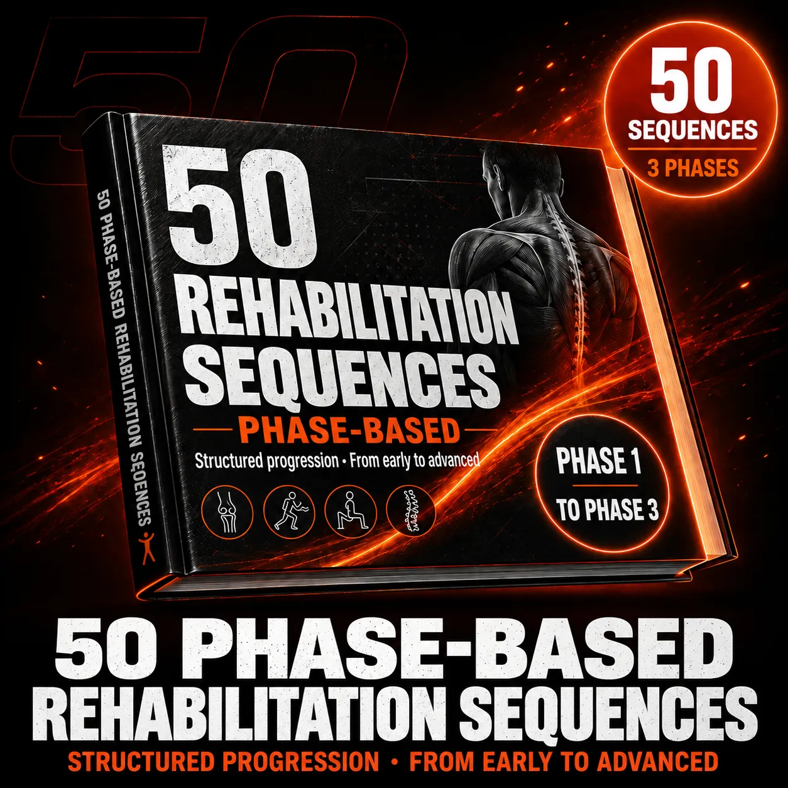
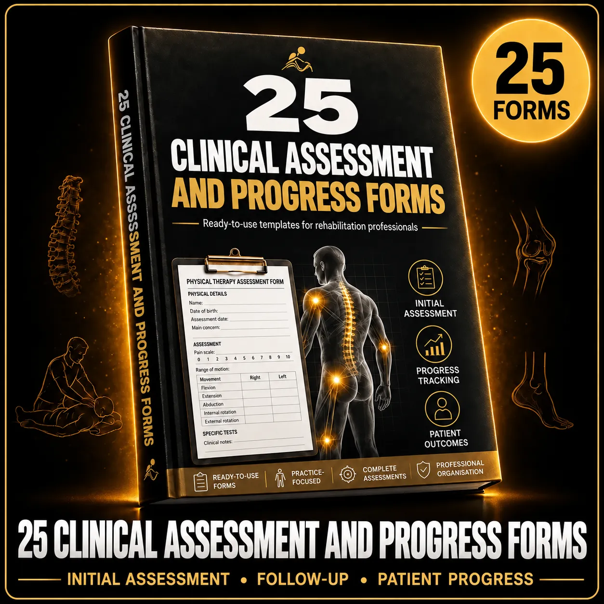
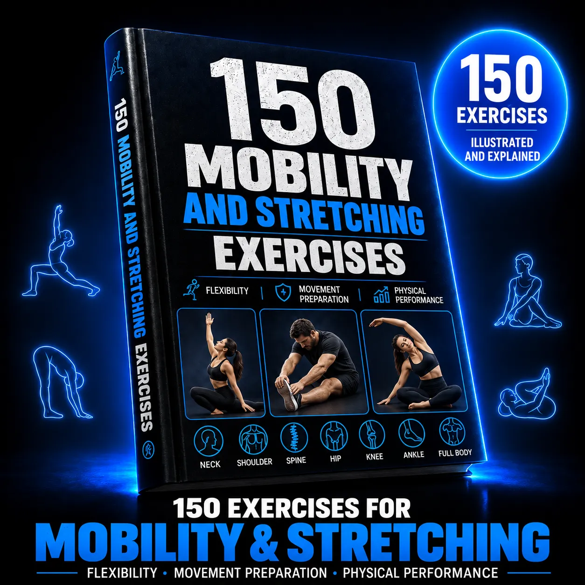
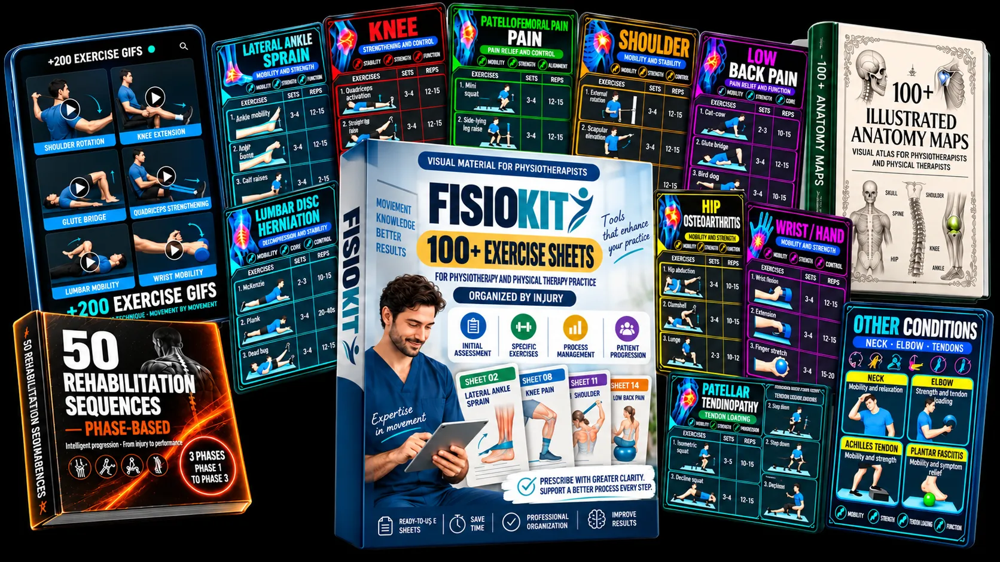

01
Consulta rápido
Encuentra fichas separadas por lesión, articulación y fase de rehabilitación.

¡Deja de perder tiempo! Sabe exactamente qué prescribir y cuáles son los mejores ejercicios terapéuticos para cada tipo de lesión, con protocolos claros, seguros y eficientes.

Menos tiempo buscando ejercicios. Más tiempo evaluando, explicando y acompañando a tus pacientes.
FisioKit Clínico te ayuda a consultar, adaptar y entregar material organizado sin perder tiempo entre paciente y paciente.
Encuentra fichas separadas por lesión, articulación y fase de rehabilitación.
Usa apoyos visuales para que el paciente comprenda qué hacer y cómo hacerlo.
Ten a mano series, repeticiones, objetivos y progresiones orientativas para tu práctica.
Un apoyo visual y práctico para consultar, planificar y explicar ejercicios terapéuticos con más claridad.
Estudiantes de fisioterapia que quieren estudiar y preparar sus prácticas con más orden.
Fisioterapeutas que necesitan consultar ejercicios y progresiones rápidamente.
Profesionales de rehabilitación que trabajan con lesiones a diario.
Quienes pierden tiempo buscando información en libros, apuntes y recursos dispersos.
Docentes y supervisores que necesitan material visual para explicar casos y ejercicios.
Profesionales que quieren entregar indicaciones más claras y fáciles de consultar.
Cada ficha está pensada para apoyarte en la consulta y facilitar el seguimiento en casa.
Bonos útiles para documentar, explicar y acompañar mejor tus procesos.

Apoyos visuales para explicar la ejecución y facilitar la comprensión.

Protocolos estructurados por fases (inicial, intermedia y avanzada) para guiar con precisión la evolución clínica de cada paciente.

Formatos de apoyo para registrar mejor la información de cada paciente.

Material organizado para complementar tus sesiones.
Consulta la ficha según la región, condición o fase que estés trabajando.
Usa tu evaluación y criterio clínico para seleccionar y ajustar los ejercicios.
Comparte una indicación clara y facilita el seguimiento en casa.
Feedback from physiotherapists and students about the structure and practical value of the material.
“I love how everything is organised by injury, and the exercises are clearly illustrated. It makes planning my sessions much easier.”
“Before FisioKit, I found it difficult to organise my sessions and find ideas for working with different injuries and patients. Now I have a much clearer structure to follow.”
“FisioKit gives me more options for my patients. The exercise sheets are also very useful for studying and reviewing exercises. I’m very happy with the material.”
“FisioKit helps me organise my clinical work much faster. The exercise sheets are clear, practical and easy to share with patients.”
“The clinical structure and visual explanations save me time when preparing home programmes. FisioKit makes it easier to give patients clear instructions.”
Recibe todo FisioKit Clinical con acceso digital inmediato y un pago único para usarlo en consulta y con tus pacientes.
Todo el material clínico y los 4 bonos para potenciar tu práctica.

Tendrás 14 días desde la confirmación de la compra para conocer el material con tranquilidad. Si no cumple lo presentado en esta página, podrás solicitar el reembolso dentro del periodo establecido.
No. Es una biblioteca de apoyo para consultar, adaptar y explicar ejercicios. La evaluación y decisión clínica corresponden siempre al profesional.
Incluye más de 100 fichas organizadas por lesión, progresiones por fases y 4 bonos: GIFs, secuencias de rehabilitación, fichas de evaluación y evolución, y movilidad y estiramiento.
Para ambos: estudiantes en prácticas, recién egresados, fisioterapeutas, kinesiólogos y profesionales independientes.
Sí, el material está pensado para ayudarte a explicar y compartir indicaciones de ejercicio terapéutico de forma más clara.
Recibirás las instrucciones de acceso por email después de confirmar el pago.
Puedes revisar el material durante 14 días. Si no cumple tus expectativas, escríbenos dentro de ese plazo para solicitar ayuda con el reembolso.
Aviso: este material no sustituye la evaluación, el diagnóstico ni la indicación individualizada de un profesional de la salud.